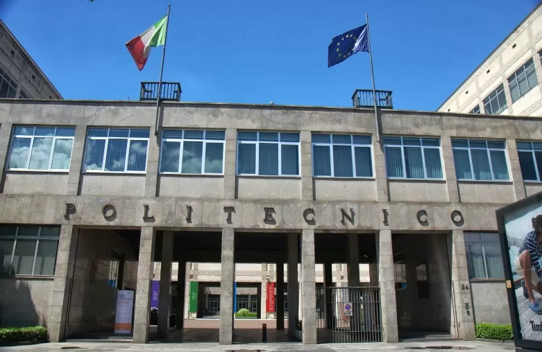

CHI SONO?
Mi chiamo Lorenzo Crosa Ho 16 anni Frequento il terzo anno di informatica al maxwell Sono nato il 16/02/2008 Vivo a Moncalieri.
LE MIE PASSIONI
A me piace molto andare in palestra e allenarmi, ormai ci vado da 4/5 mesi ci vado con dei miei amici e ci stiamo di solito 1/2 ore, la cosa che mi piace molto è che ogni volta che vado cerco di superare i miei limiti: Un'alta mia passione è la musica sia da ascoltare che da suonare, ascoltare la musica mi piace perchè in base hai momenti mi può dare la giusta carica (come ad esempio in palestra), invece da praticare mi piace tanto suonare la batteria, ma in più so suonare anche alcune tastiere e la tromba. L'ultima passione sono i fumetti, io colleziono fumetti da ormai 10 anni e ormai ne ho collezionati parecchi tra manga(fumetti giapponesi) e tra i fumetti americani(come quelli dei supereroi).mi piacciono molto perche ècome se leggessi un libro ma riesco capire di più il contesto è sono anche più veloci da leggere.
I miei obbiettivi a breve termine sono: Diminuire la mia massa grassa e aumentare la mia massa muscolare Riuscire ad andare bene a scuola impegnandomi per imparare Mantenere le mie amicizie più strette e la mia relazione
Invece i miei obbiettivi a lungo termine sono: Riuscire a finire gli studi e iscrivermi al politecnico di torino, Trovare un lavoro che mi dia soddisfazione Rendere fieri di me i miei genitori
CITAZIONE
Una delle mie citazione preferite è "Da grandi poteri derivano grandi responsabilità". Questa frase per me indica il fatto che se una persona ha un grande potere in ogni contesto non deve comportarsi da saccente ma piuttosto aiutare il prossimo su quella cosa in cui si è più bravi.
